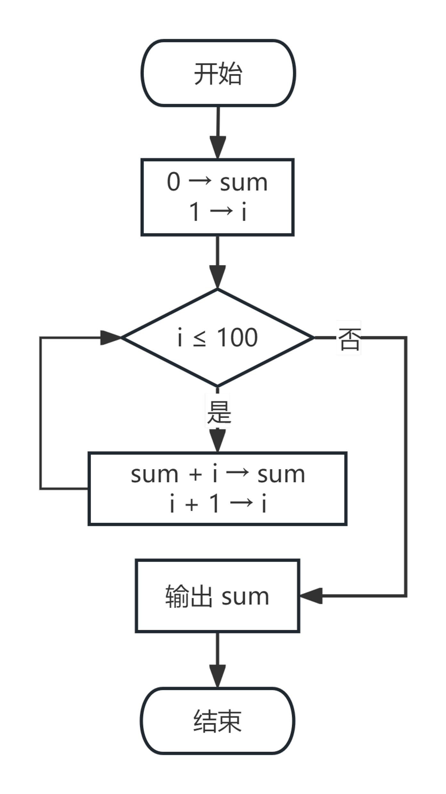
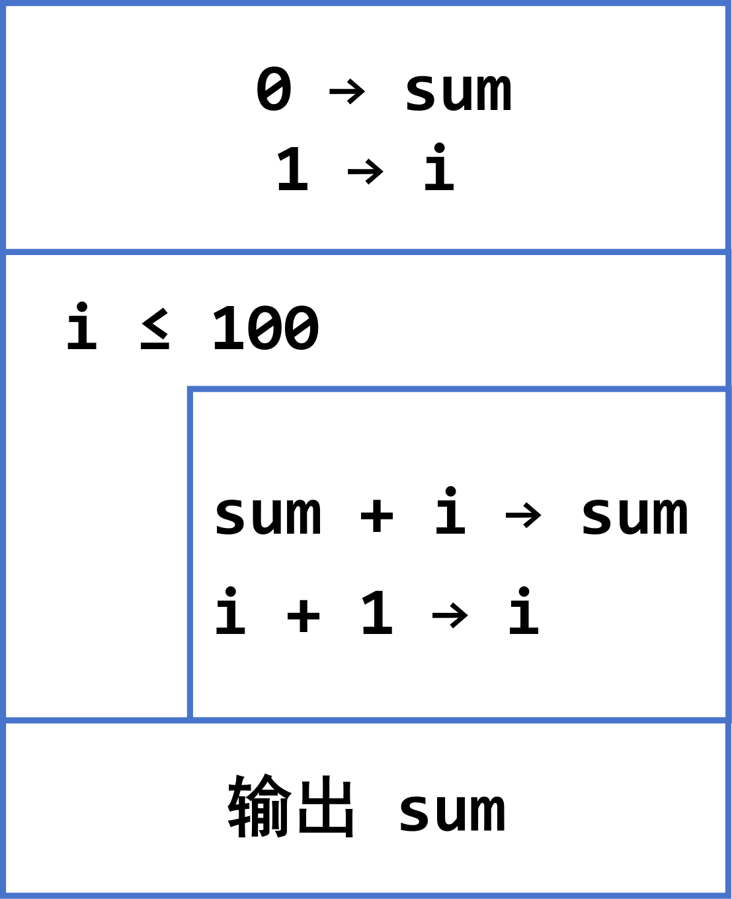

习题与参考答案
一、选择题
1. 计算机唯一能够直接识别和运行的语言是（ ）。
A. 汇编语言 B. 高级语言 C. 机器语言 D. 自然语言
查看答案与解析
答案：C
解析：机器语言是用二进制代码表示的、计算机能直接识别和执行的一种机器指令的集合，是计算机唯一能够直接识别和运行的语言。汇编语言和高级语言都必须经过翻译才能被计算机执行。
2. 下列关于算法的叙述中，错误的是（ ）。
A. 算法必须有输出 B. 算法必须在有限步内结束
C. 算法必须有输入 D. 算法的每一步都必须有确定含义
查看答案与解析
答案：C
解析：算法可以有 0 ~ n 个输入，但必须有 1 ~ n 个输出。A、B、D 分别对应算法的"有输出""有穷性""确定性"三个特点。
3. 用高级语言编写的程序称为（ ）。
A. 目标程序 B. 源程序 C. 可执行程序 D. 汇编程序
查看答案与解析
答案：B
解析：使用高级计算机语言编写的程序称为源程序；源程序经编译后形成的 .obj 文件称为目标程序；链接后形成的 .exe 文件称为可执行程序。
4. 结构化程序设计的三种基本结构是（ ）。
A. 顺序、函数、过程 B. 顺序、选择、循环
C. 分支、循环、递归 D. 主函数、子函数、模块
查看答案与解析
答案：B
解析：为限制使用无条件转移语句（如 goto），结构化程序设计规定只用顺序结构、选择结构、循环结构三种基本结构来构建程序。
5. 以下关于 C 语言程序的叙述中，正确的是（ ）。
A. C 程序可以没有 main 函数
B. C 程序可以从任意一个函数开始执行
C. C 程序中有且仅有一个 main 函数
D. main 函数必须放在程序最前面
查看答案与解析
答案：C
解析：C 程序由若干个函数组成，其中有且仅有一个 main 函数，程序总是从 main 函数开始执行；main 函数的位置可以放在任意位置，不一定要在最前面。
6. 下列转义字符中，表示换行的是（ ）。
A. \t B. \n C. \\ D. \0
查看答案与解析
答案：B
解析：\n 是换行符（newline）；\t 是水平制表符；\\ 表示一个反斜杠字符；\0 是空字符。
二、填空题
1. 十进制数 45 转换成二进制数是 ________，转换成十六进制数是 ________。
查看答案与解析
答案：101101；2D
解析：45 = 32 + 8 + 4 + 1 = 1011012；再由 0010 1101 分组得 2D16。
2. 二进制数 (101101)2 对应的八进制数是 ________，对应的十进制数是 ________。
查看答案与解析
答案：55；45
解析：101101 按 3 位分组为 101 | 101 → 5 | 5，即 (55)8；按权展开 32+8+4+1 = 45。
3. 高级语言翻译成机器语言有两种方式：________ 和 ________。
查看答案与解析
答案：解释；编译
解析：解释是"一边翻译，一边运行"；编译是"翻译完成后，再运行"，编译后生成 .obj 目标文件，链接后生成 .exe 可执行文件。
4. 算法的优劣可以用 ________ 和 ________ 来衡量。
查看答案与解析
答案：时间复杂度；空间复杂度
解析：时间复杂度衡量算法执行所耗费的时间，空间复杂度衡量算法执行所耗费的存储空间。
5. 算法的五个特点分别是：________、________、________、有 0~n 个输入、有 1~n 个输出。
查看答案与解析
答案：有穷性（有限性）；确定性；有效性
解析：算法必须满足有穷性、确定性、有效性、有 0~n 个输入、有 1~n 个输出这五个特点。
三、判断题
1. 汇编语言可以在不同平台的计算机之间直接移植。（ ）
查看答案与解析
答案：×
解析：特定的汇编语言与特定的机器语言指令集一一对应，不同平台之间不可直接移植。
2. C 语言源程序文件的扩展名是 .c。（ ）
查看答案与解析
答案：√
解析：C 语言源程序是以 .c 结尾的文件。
3. C 语言编译时会忽略 /* */ 之间的注释内容。（ ）
查看答案与解析
答案：√
解析：C 语言系统编译时，忽略介于 /* 与 */ 之间的文本，使用一个空格替代。
4. N-S 流程图去掉了流程线，全部算法写在一个矩形框内。（ ）
查看答案与解析
答案：√
解析：N-S 流程图（盒图）没有流程线，由若干基本框组成，便于结构化设计。
四、简答题
1. 简述机器语言、汇编语言、高级语言三者的关系。
查看参考答案
- 机器语言：是计算机唯一能识别的语言，全部由二进制代码组成，但普通人无法理解，且不同型号计算机之间不相通。
- 汇编语言：用助记符表示指令，少部分专业人士可以理解，但计算机无法识别，需要汇编程序翻译；与特定机器指令集一一对应，不可直接移植。
- 高级语言：以人类日常语言为基础，多数人可以理解和使用，但计算机无法识别，必须通过解释或编译的方式翻译成机器语言。高级语言可移植性好。
- 总结：三者是从"面向机器"到"面向人类"的逐步演进；越接近机器，计算机越容易识别、人越难使用；越接近人类，人越容易使用、计算机越不能直接识别。
2. 什么是算法？算法有哪些特点？
查看参考答案
算法是对解题方案准确而完整的一系列清晰有序的指令（An algorithm is a step by step process used to carry out some function）。
算法的特点：
- 有穷性（有限性）：算法必须在执行有限步之后结束；
- 确定性：每一步的含义必须明确无歧义；
- 有效性：每一个步骤都应当有效且可实际执行；
- 有 0~n 个输入；
- 有 1~n 个输出。
3. 算法的表示方法有哪些？各有什么特点？
查看参考答案
| 表示方法 | 特点 |
|---|---|
| 自然语言法 | 通俗易懂，但容易产生歧义，冗长，难以表达分支和循环 |
| 传统流程图法 | 用图形符号描述流程，直观形象，便于发现逻辑错误，但流程线过多时不易阅读 |
| N-S 流程图法 | 去掉流程线，全部算法写在一个矩形框内，强制结构化，结构清晰 |
| 伪代码法（pseudo-code） | 介于自然语言与计算机语言之间，不拘泥于语法细节，便于向程序过渡 |
五、编程题
1. 编写一个 C 程序，在屏幕上输出一行文字：Hello, C Language!
查看参考答案
//学号_姓名.c //功能：在屏幕上输出一行文字 #include <stdio.h> int main() { printf("Hello, C Language!\n"); return 0; }
2. 编写程序，输出下列结果（要求用 %d 占位符，让计算机自己计算）：
查看参考答案
#include <stdio.h> int main() { printf("12+34=%d\n", 12 + 34); printf("100-25=%d\n", 100 - 25); return 0; }
3. 编写程序，输入一个年份，输出"你好,年份"。例如输入 2026，输出"你好,2026"。
查看参考答案
#include <stdio.h> int main() { int year; scanf("%d", &year); printf("你好,%d\n", year); return 0; }
注意：scanf 中的 &year 不能写成 year；printf 中的 %d 与 year 必须一一对应。
4. 仿照计算5!的算法，画出求 1+2+3+…+100 的算法流程图（可用传统流程图或 N-S 流程图）。
查看参考答案
算法思路：
- 设 sum = 0，i = 1；
- 若 i ≤ 100，则执行 (3)；否则执行 (4)；
- sum = sum + i；i = i + 1；返回 (2)；
- 输出 sum。
传统流程图：

N-S 流程图：

结果：sum = 5050
- 掌握常用数制（二、八、十、十六）及其相互转换方法。
- 了解计算机语言发展的三个阶段：机器语言 → 汇编语言 → 高级语言，以及三种语言各自的特点与相互关系。
- 掌握高级语言的两种翻译方式：解释与编译，以及 C 程序从
.c→.obj→.exe的过程。 - 掌握算法的概念、五个特点、评价标准，以及四种表示方法（自然语言、伪代码、传统流程图、N-S 流程图）。
- 掌握结构化程序设计的三种基本结构：顺序、选择、循环。
- 能够编写、编译并运行第一个 C 程序，理解注释、预处理指令、main 函数、花括号、语句、转义字符
\n、返回值等基本概念，并会使用printf与scanf完成简单的输入输出。